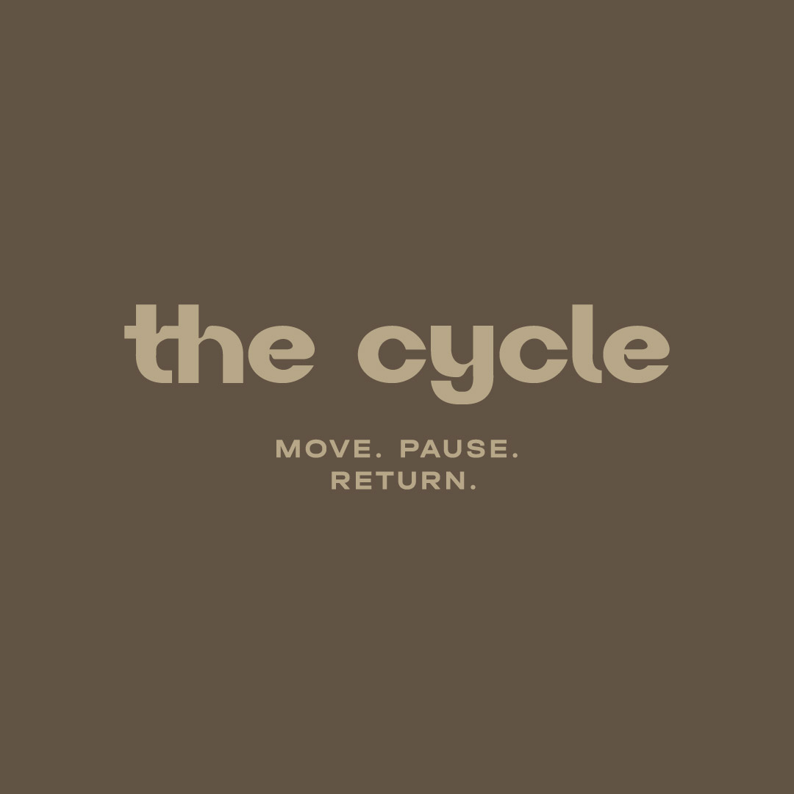
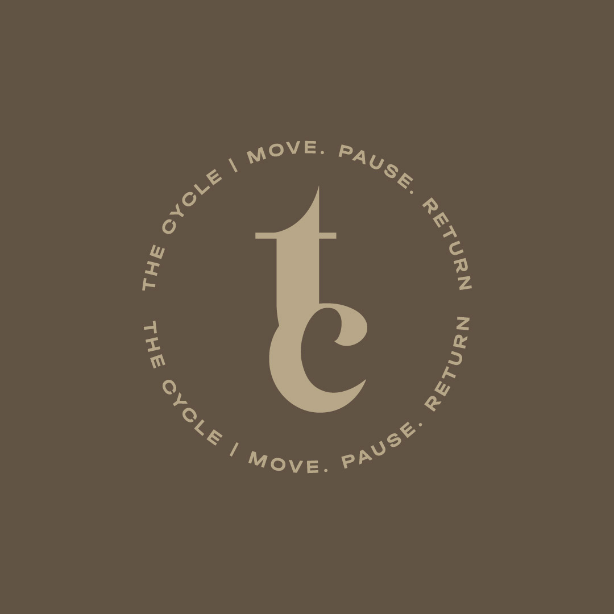
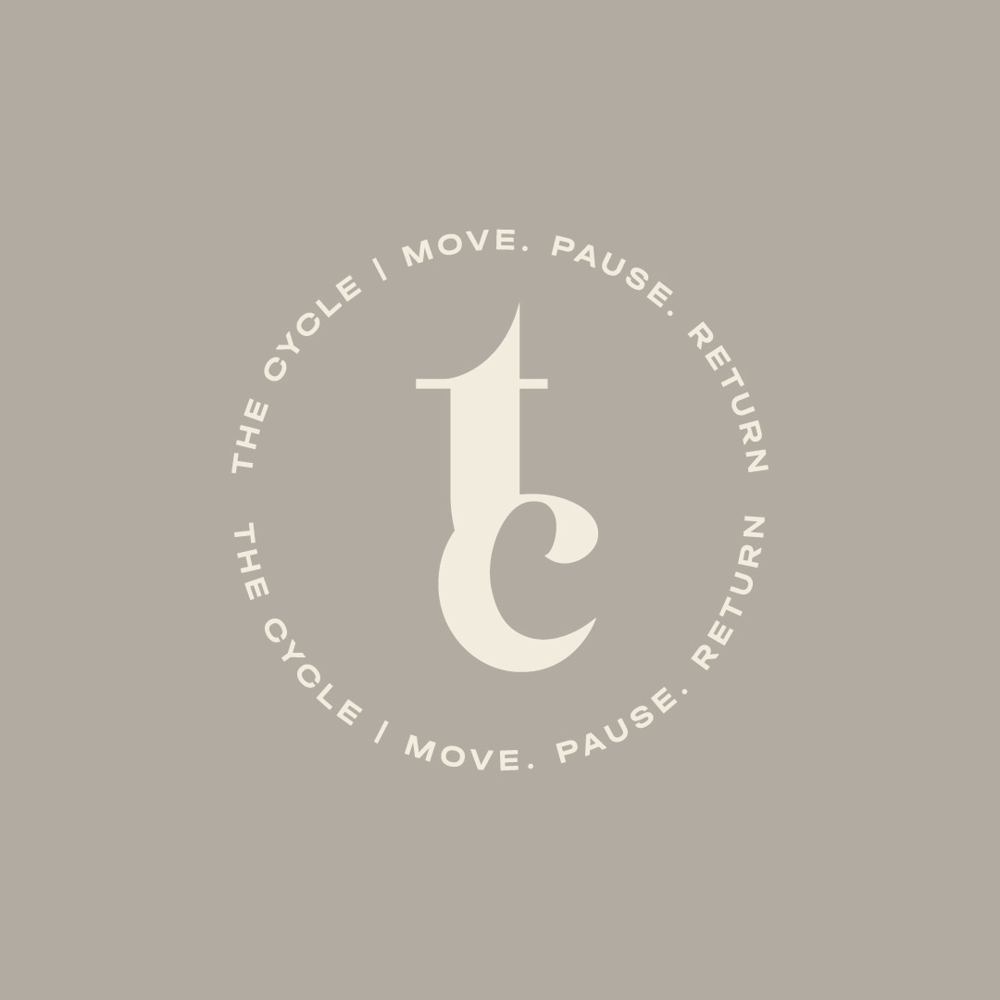

Observar
Perceber pensamentos, emoções, comportamentos e sinais do corpo antes de reagir.
O que está acontecendo agora?
Move. Pause. Return.
O The Cycle é uma comunidade para quem quer sair do piloto automático, criar uma rotina possível e aprender a continuar — com consciência, constância e apoio.

Tudo é um ciclo.
Até o retorno.
A nossa filosofia
Cada ciclo vivido transforma você e prepara o próximo. Evoluir não é seguir uma linha reta: é voltar com mais experiência, clareza e consciência. Aqui, você não aprende qual caminho seguir. Aprende a caminhar qualquer caminho com presença.
O que queremos mudar
Comparação
Culpa
Excesso
Desconexão
Consciência
Autonomia
Equilíbrio
Escolha
Método The Cycle
Uma ferramenta de desenvolvimento pessoal, saúde e bem-estar para compreender comportamentos e transformar intenção em uma rotina que faça sentido para você.
Perceber pensamentos, emoções, comportamentos e sinais do corpo antes de reagir.
O que está acontecendo agora?Separar fatos de interpretações e entender o que realmente conduz cada escolha.
O que está por trás disso?Deixar de carregar hábitos, expectativas e estratégias que já não servem.
O que não preciso repetir?Transformar clareza em decisão, decisão em ação e ação em uma rotina possível.
O que escolho construir agora?
“Não quero mais isso” é apenas o começo. A pergunta mais importante é: o que eu quero viver no lugar?
Experiências The Cycle
Escolha o nível de apoio que combina com o ciclo que você quer construir. Valores e datas serão anunciados em breve.
CYCLE ESSENTIAL
Para quem quer conhecer o método e iniciar uma rotina mais consciente.
CYCLE CLUB
EXPERIÊNCIA COMPLETAPara quem deseja apoio contínuo, encontros e experiências ao longo do ciclo.
CYCLE INDIVIDUAL
Para quem busca uma jornada pessoal, com direcionamento e atenção individual.
Mais que um programa
Evoluímos melhor quando caminhamos juntos. O The Cycle cria espaço para troca, apoio, prática e retorno — sem competição e sem a cobrança de ser perfeito.
O próximo ciclo começa aqui
Estamos preparando as próximas experiências do The Cycle. Entre na lista para receber as novidades primeiro.